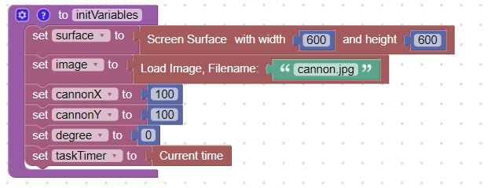

<h1>Move an image based on wasd keys</h1>
This code will initialize the wasdMove example<br>
<br>
This code will handle the pygame.MOUSEMOVE event<br>
<br>
This code will handle the pygame.KEYUP and pygame.KEYDOWN events<br>
<br>
<hr>
<center></center>